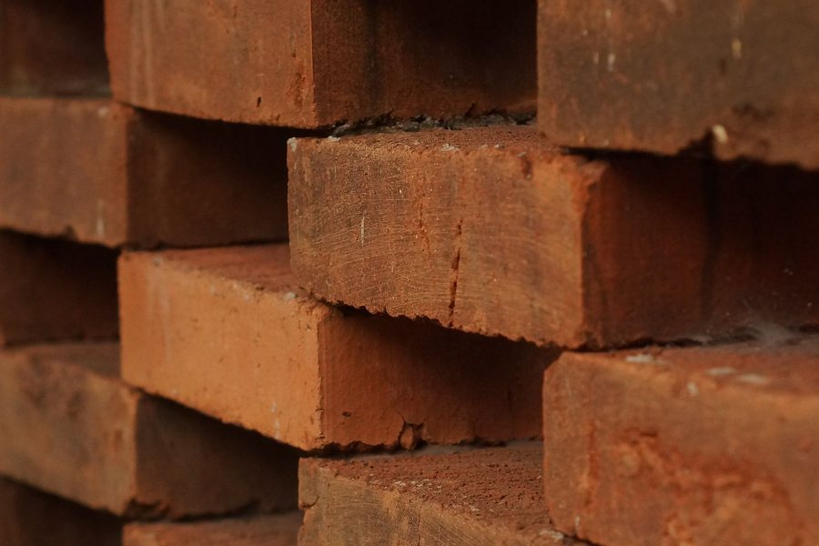
Brique pleine
Mur porteur, clôture, ouvrages exposés. La plus dense de la gamme.
500 / 450 / 400 Fdétail · demi-gros · gros
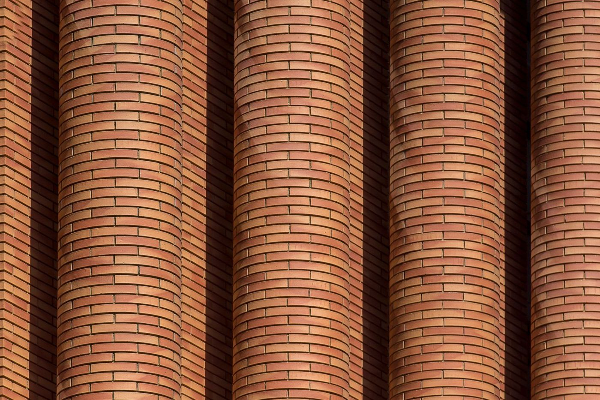
Toumodi · Côte d'Ivoire
Briques, plaquettes de parement, tuiles, tomettes et claustras en terre cuite. Une argile que nous extrayons nous-mêmes, cuite au feu de coques d'anacarde, livrée dans toute la Côte d'Ivoire.
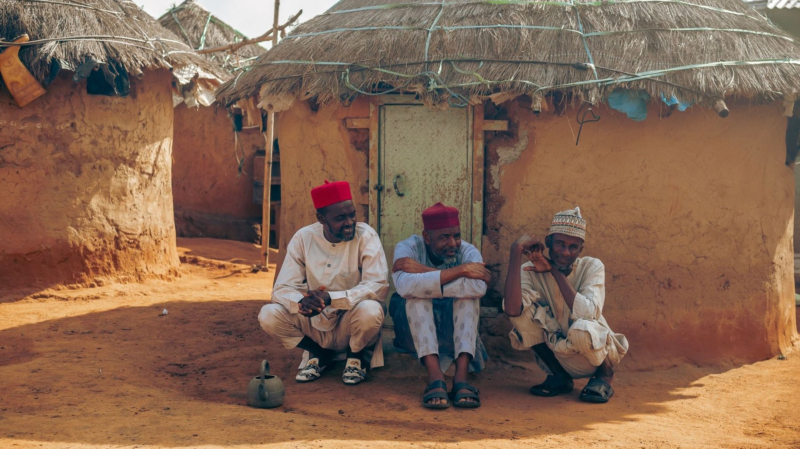
Notre raison d'être
Être propriétaire d'une maison ne devrait pas être le but d'une vie,
mais plutôt le début.
Chez nous, on ne construit pas un abri. On construit le lieu où l'on naît, où l'on reçoit, où l'on veille les anciens. La maison est le premier investissement d'une famille et le dernier qu'elle accepte de perdre.
Alors la question n'est pas seulement « combien ça coûte ». Elle est aussi : dans quoi allez-vous vivre durant votre passage terrestre ? Que léguez-vous à votre descendance ?
Le dérèglement climatique nous oblige à revenir aux fondamentaux. Bâtir avec la terre que nous avons sous les pieds plutôt qu'avec des matériaux qui traversent la planète, c'est préserver l'écosystème. Pas seulement pour nous. Pour ceux qui viennent après.
Hier, aujourd'hui, demain
Ce que nous industrialisons aujourd'hui, nos mères et nos pères le maîtrisaient déjà. Nous n'importons pas une technique. Nous rendons son échelle à un savoir qui est le nôtre.
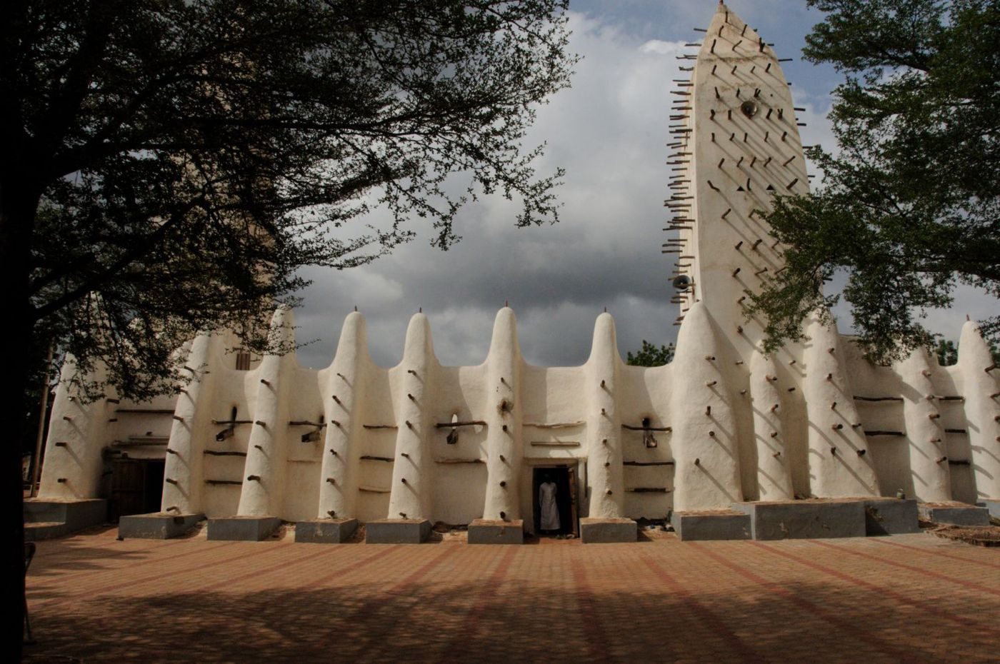
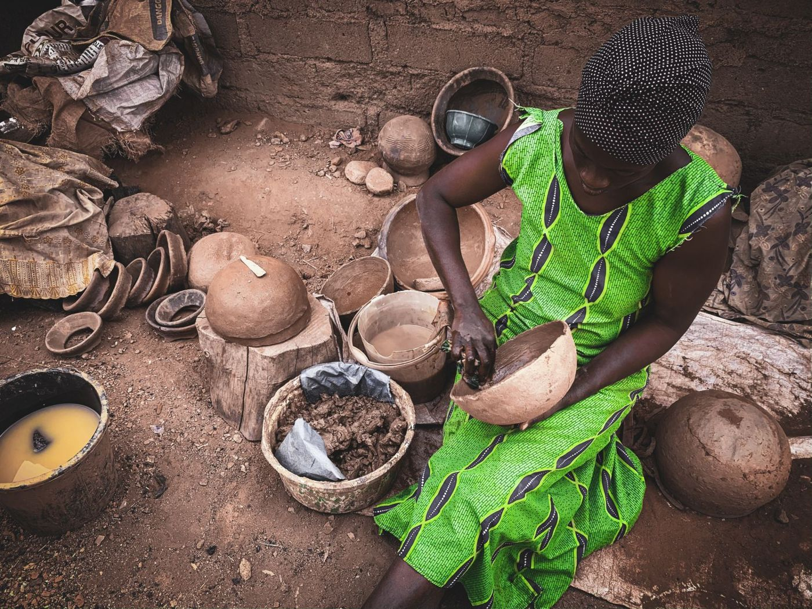
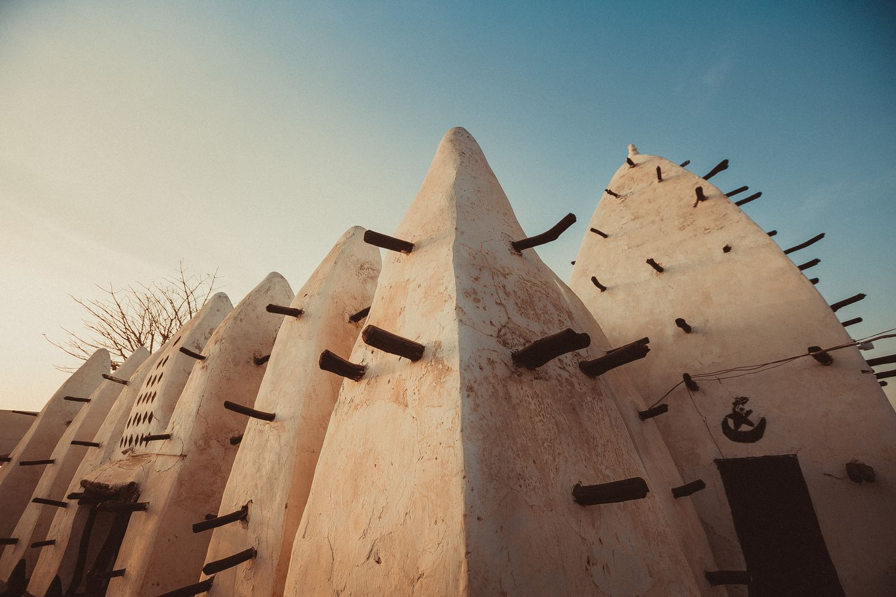
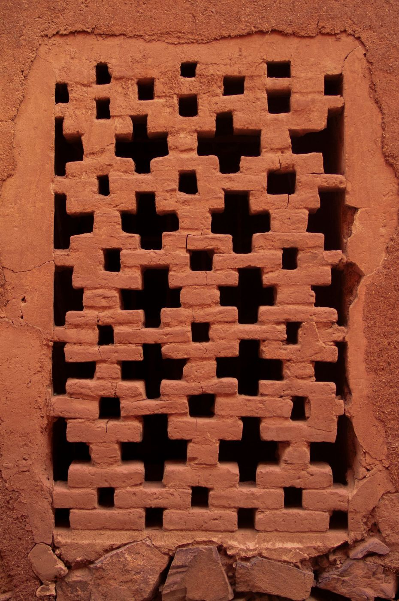
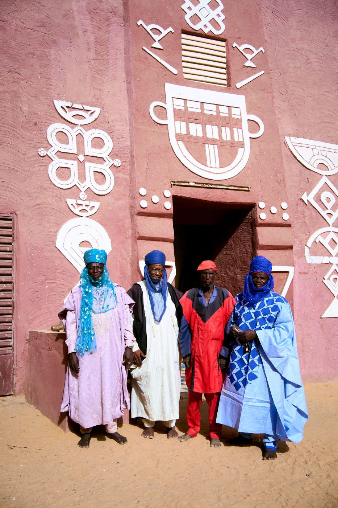
Le banco, la voûte nubienne, la poterie. La terre sous les pieds, façonnée à la main, cuite au feu de bois.
La même terre, extraite dans nos carrières, malaxée, extrudée, cuite en four à Toumodi. Le calibre devient constant, la résistance devient mesurable.
Que la génération suivante n'ait pas à choisir entre bâtir moderne et bâtir sain. Parce que la terre, au bout du compte, reste notre refuge.
La gamme
Le mur, le sol, la toiture et la façade. Tout se commande. Vous passez commande, nous confirmons dans la journée la quantité, le délai réel et le prix ferme.

Mur porteur, clôture, ouvrages exposés. La plus dense de la gamme.
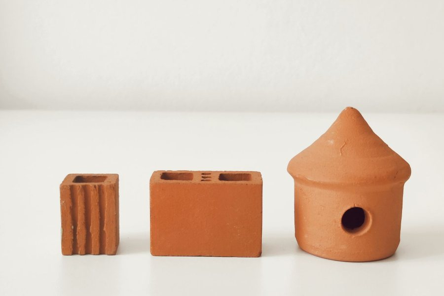
Mur porteur allégé. Moins de matière, moins de poids, meilleure isolation.
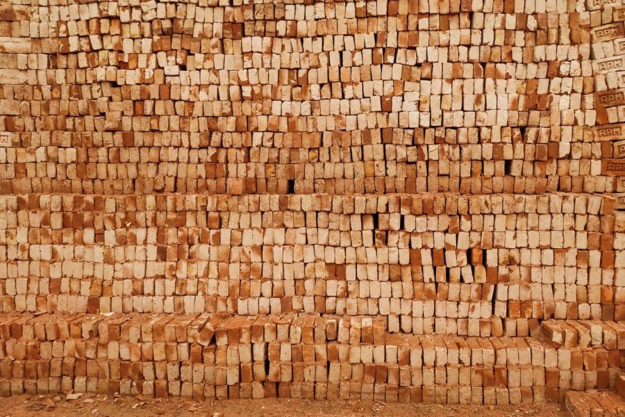
Façade et mur intérieur. Une façade qui n'a plus besoin d'enduit ni de peinture.
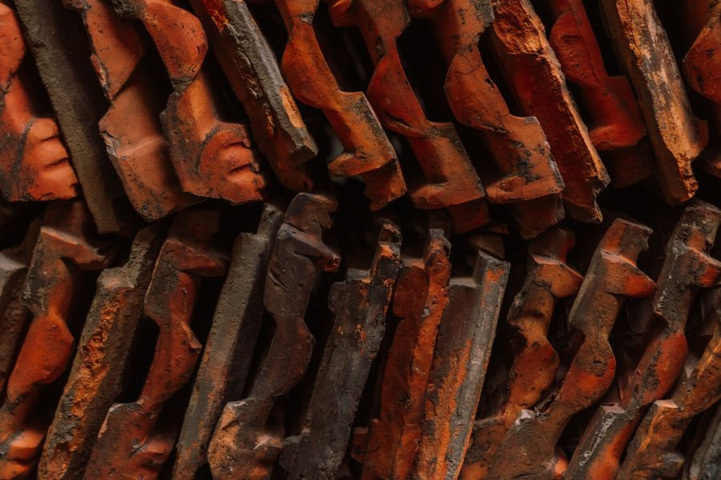
Hors calibre ou légèrement épaufré. Pour les ouvrages non visibles et les remblais.
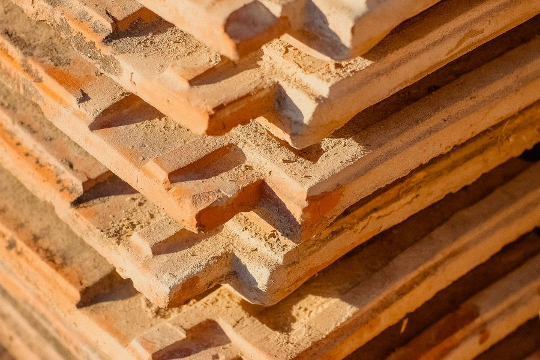
Elle remplace la tôle. Ne chauffe pas la maison au soleil de midi, ne fait pas de bruit sous la pluie.
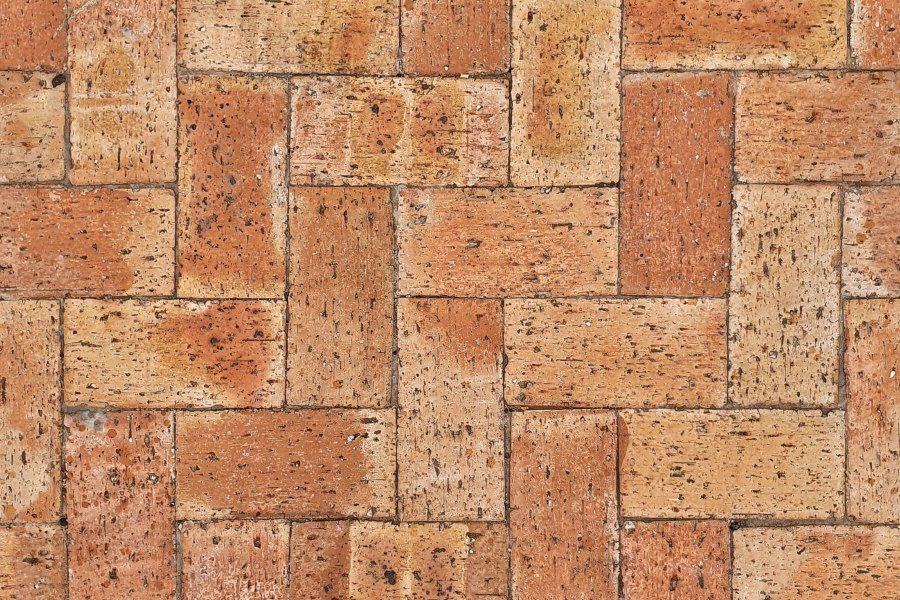
Sol intérieur et terrasse. Le carreau de terre cuite, frais sous le pied, qui vieillit bien.
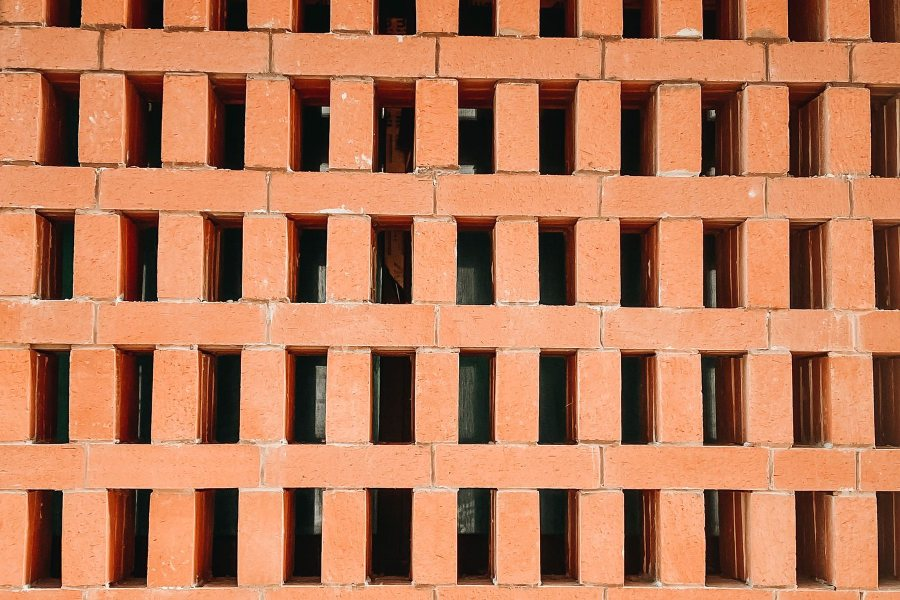
Le mur qui laisse passer l'air et arrête le soleil. L'élément le plus demandé sur les façades ivoiriennes.
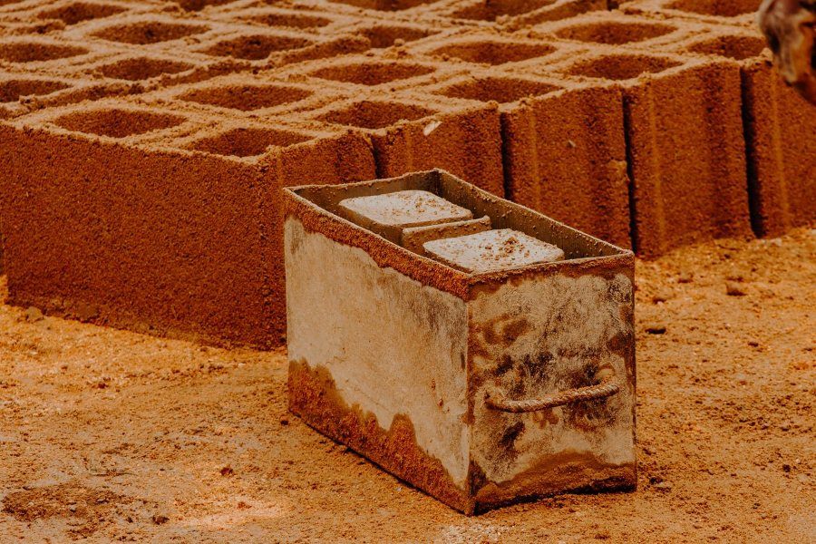
Entrevous de plancher. Il allège la dalle et remplace le hourdis béton, à volume égal.
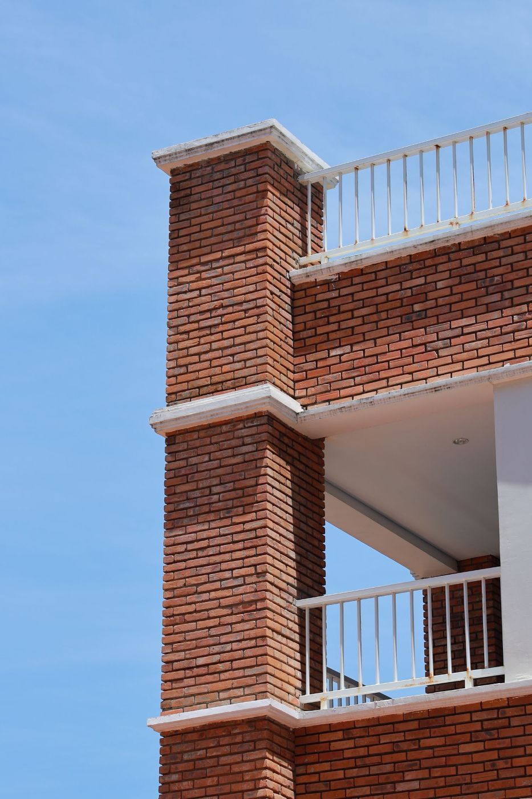
Chiffrer
Les prix sont publics et dégressifs. Entrez votre surface de mur, tout se calcule. Aucun compte à créer, aucun formulaire à remplir.
| Produit | Détail < 500 |
Demi-gros 500 à 5 000 |
Gros > 5 000 |
|---|---|---|---|
| Brique pleine ou perforée | 500 F | 450 F | 400 F |
| Plaquette de parement | 400 F | 375 F | 350 F |
| Second choix | 250 F | 220 F | 200 F |
Prix unitaires en FCFA, hors transport. Le camion est affrété selon le tonnage et la fragilité du produit, et son coût figure en ligne séparée sur votre devis.
soit environ 2 634 €
Envoyer ce calcul sur WhatsAppEstimation. Elle ne tient compte ni des ouvertures, ni du mortier, ni de la casse de chantier. Un devis nominatif poste par poste vous est établi avant tout engagement.
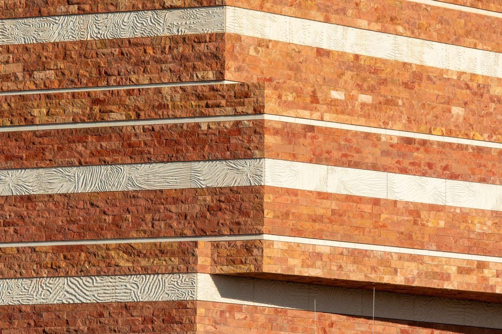
Terre cuite ou parpaing
Nous ne sommes pas contre le ciment, nous en vendons. Mais sur un mur d'habitation, sous ce climat, la terre cuite a des propriétés que le parpaing n'a pas.
Une paroi qui garde mieux la fraîcheur en pleine journée. Un matériau qui respire et régule l'humidité, donc moins de moisissures dans les chambres et moins de peinture qui cloque au bout de deux saisons. Une façade en parement qui n'a plus besoin d'enduit. Et une matière première locale : une argile que nous extrayons nous-mêmes, dans nos carrières, et que nous cuisons sur place.
Nous n'avons ni label environnemental, ni essai de laboratoire publié sur nos propres briques, ni bilan carbone certifié. Cuire de la terre demande du feu, et le feu a un coût. Nous ne dirons pas que notre brique est neutre en carbone, parce que personne ne l'a mesuré. Ce que nous pouvons dire, c'est d'où vient ce feu.
L'usine
Le site est choisi pour trois raisons : l'argile est sous nos pieds, l'autoroute A3 passe devant, et Toumodi se trouve au centre du pays.
Ce centre n'est pas une limite, c'est un point de départ. L'A3 descend sur Abidjan et remonte vers Yamoussoukro et le nord. Nous visons quarante-huit heures de livraison sur tout le territoire ivoirien, avec un camion adapté au tonnage et à la fragilité du produit, puis la sous-région, puis le continent. Yamoussoukro, Dimbokro, Tiébissou et Djékanou ne sont pas notre périmètre : ce sont simplement les premiers servis.
Voici où nous en sommes, étape par étape. Nous documenterons chacune d'elles avec des photos datées, y compris celles qui prennent du retard.
MIENYAKWAISO ANWANZE SARL, immatriculée depuis septembre 2016, RCCM CI-TDI-2016-B-570.
Gisement identifié à Toumodi, en bordure de l'A3.
Nous extrayons notre argile dans nos propres carrières. Ce sont les briques sorties du four qui seront testées, au LBTP ou à l'INP-HB de Yamoussoukro. Tant que ce n'est pas fait, nous ne publierons aucune caractéristique technique.
Terrassement, montage, four. Chaque étape sera photographiée et datée.
C'est à ce moment, et pas avant, que nous publierons nos caractéristiques réelles et nos délais fermes.
Nous ouvrons la précommande dès maintenant parce qu'elle nous dit quels produits lancer en premier. Elle ne vous engage pas : aucun paiement n'est demandé tant que nous ne vous avons pas confirmé un délai ferme et un prix ferme.
Partenaires
Trois portes. Derrière chacune, quelqu'un qui lit vraiment les messages et qui répond, y compris pour dire non.
Qui est derrière
C'est la question que vous devez poser, et voici la réponse sans détour. La brique n'existe pas encore. L'entreprise, elle, existe, avec une adresse, une équipe et des clients.
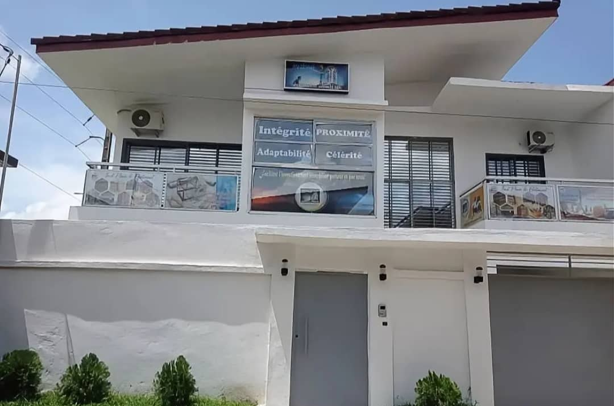
Créée en septembre 2016 à Toumodi, rue du Commerce. Elle exploite une quincaillerie ouverte tous les jours et un département BTP dirigé par un ingénieur diplômé de l'ENSTP de Yamoussoukro. C'est cette société qui porte le projet terre cuite, avec ses moyens et sa réputation.
Dix ans, de 2016 à 2026. Nous ne prétendrons pas qu'ils ont été faciles : il y a eu des saisons dures et des années où il a fallu serrer. Beaucoup d'entreprises nées la même année que nous ont fermé depuis. Nous sommes toujours là, à la même adresse, et nous comptons y rester durablement. C'est la seule chose qu'un concurrent ne peut pas copier.
Vous pouvez venir la voir. C'est le contraire d'une société créée pour l'occasion.
Et elle n'arrive pas les mains vides. Dix ans d'activité ont construit un carnet de plus de 10 000 ouvriers du BTP référencés, maçons, ferrailleurs, carreleurs, ferronniers, plombiers, électriciens, joignables en temps réel. Plus 20 à 30 revendeurs de matériaux en relation suivie. Ce sont des indépendants, pas des salariés : nous les mobilisons lot par lot, partout en Côte d'Ivoire et au-delà. C'est ce qui permet d'armer un chantier en quelques jours, et c'est par ces revendeurs que passera la distribution de la terre cuite.
Une surface, un plan, ou simplement une idée. Nous répondons avec des chiffres, pas avec des promesses.